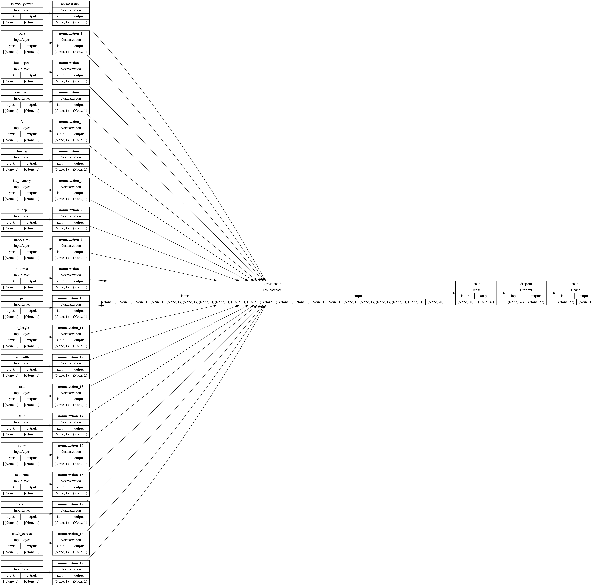

Mobile Classifikation
Mobile Classifikation#
import numpy as np
import pandas as pd
import tensorflow as tf
from tensorflow.keras import layers
tf.__version__
'2.7.1'
df = pd.read_csv('Mobile_Price_train.csv',error_bad_lines=False,warn_bad_lines=True)
print(df) # Ausgabe
battery_power blue clock_speed dual_sim fc four_g int_memory \
0 842 0 2.2 0 1 0 7
1 1021 1 0.5 1 0 1 53
2 563 1 0.5 1 2 1 41
3 615 1 2.5 0 0 0 10
4 1821 1 1.2 0 13 1 44
... ... ... ... ... .. ... ...
1995 794 1 0.5 1 0 1 2
1996 1965 1 2.6 1 0 0 39
1997 1911 0 0.9 1 1 1 36
1998 1512 0 0.9 0 4 1 46
1999 510 1 2.0 1 5 1 45
m_dep mobile_wt n_cores ... px_height px_width ram sc_h sc_w \
0 0.6 188 2 ... 20 756 2549 9 7
1 0.7 136 3 ... 905 1988 2631 17 3
2 0.9 145 5 ... 1263 1716 2603 11 2
3 0.8 131 6 ... 1216 1786 2769 16 8
4 0.6 141 2 ... 1208 1212 1411 8 2
... ... ... ... ... ... ... ... ... ...
1995 0.8 106 6 ... 1222 1890 668 13 4
1996 0.2 187 4 ... 915 1965 2032 11 10
1997 0.7 108 8 ... 868 1632 3057 9 1
1998 0.1 145 5 ... 336 670 869 18 10
1999 0.9 168 6 ... 483 754 3919 19 4
talk_time three_g touch_screen wifi price_range
0 19 0 0 1 1
1 7 1 1 0 2
2 9 1 1 0 2
3 11 1 0 0 2
4 15 1 1 0 1
... ... ... ... ... ...
1995 19 1 1 0 0
1996 16 1 1 1 2
1997 5 1 1 0 3
1998 19 1 1 1 0
1999 2 1 1 1 3
[2000 rows x 21 columns]
C:\Users\Jerma\AppData\Local\Temp\ipykernel_9684\3119796705.py:1: FutureWarning: The error_bad_lines argument has been deprecated and will be removed in a future version. Use on_bad_lines in the future.
df = pd.read_csv('Mobile_Price_train.csv',error_bad_lines=False,warn_bad_lines=True)
C:\Users\Jerma\AppData\Local\Temp\ipykernel_9684\3119796705.py:1: FutureWarning: The warn_bad_lines argument has been deprecated and will be removed in a future version. Use on_bad_lines in the future.
df = pd.read_csv('Mobile_Price_train.csv',error_bad_lines=False,warn_bad_lines=True)
df.head()
| battery_power | blue | clock_speed | dual_sim | fc | four_g | int_memory | m_dep | mobile_wt | n_cores | ... | px_height | px_width | ram | sc_h | sc_w | talk_time | three_g | touch_screen | wifi | price_range | |
|---|---|---|---|---|---|---|---|---|---|---|---|---|---|---|---|---|---|---|---|---|---|
| 0 | 842 | 0 | 2.2 | 0 | 1 | 0 | 7 | 0.6 | 188 | 2 | ... | 20 | 756 | 2549 | 9 | 7 | 19 | 0 | 0 | 1 | 1 |
| 1 | 1021 | 1 | 0.5 | 1 | 0 | 1 | 53 | 0.7 | 136 | 3 | ... | 905 | 1988 | 2631 | 17 | 3 | 7 | 1 | 1 | 0 | 2 |
| 2 | 563 | 1 | 0.5 | 1 | 2 | 1 | 41 | 0.9 | 145 | 5 | ... | 1263 | 1716 | 2603 | 11 | 2 | 9 | 1 | 1 | 0 | 2 |
| 3 | 615 | 1 | 2.5 | 0 | 0 | 0 | 10 | 0.8 | 131 | 6 | ... | 1216 | 1786 | 2769 | 16 | 8 | 11 | 1 | 0 | 0 | 2 |
| 4 | 1821 | 1 | 1.2 | 0 | 13 | 1 | 44 | 0.6 | 141 | 2 | ... | 1208 | 1212 | 1411 | 8 | 2 | 15 | 1 | 1 | 0 | 1 |
5 rows × 21 columns
df.info()
<class 'pandas.core.frame.DataFrame'>
RangeIndex: 2000 entries, 0 to 1999
Data columns (total 21 columns):
# Column Non-Null Count Dtype
--- ------ -------------- -----
0 battery_power 2000 non-null int64
1 blue 2000 non-null int64
2 clock_speed 2000 non-null float64
3 dual_sim 2000 non-null int64
4 fc 2000 non-null int64
5 four_g 2000 non-null int64
6 int_memory 2000 non-null int64
7 m_dep 2000 non-null float64
8 mobile_wt 2000 non-null int64
9 n_cores 2000 non-null int64
10 pc 2000 non-null int64
11 px_height 2000 non-null int64
12 px_width 2000 non-null int64
13 ram 2000 non-null int64
14 sc_h 2000 non-null int64
15 sc_w 2000 non-null int64
16 talk_time 2000 non-null int64
17 three_g 2000 non-null int64
18 touch_screen 2000 non-null int64
19 wifi 2000 non-null int64
20 price_range 2000 non-null int64
dtypes: float64(2), int64(19)
memory usage: 328.2 KB
# To find the number of duplicate rows
duplicate_rows_df = df[df.duplicated()]
print("number of duplicate rows: ", duplicate_rows_df.shape)
number of duplicate rows: (0, 21)
#Fehlende Werte erkennen. Gibt ein boolesches Objekt zurück, das angibt, ob die Werte NA sind
df.isna().sum().sort_values(ascending=False)
battery_power 0
px_height 0
wifi 0
touch_screen 0
three_g 0
talk_time 0
sc_w 0
sc_h 0
ram 0
px_width 0
pc 0
blue 0
n_cores 0
mobile_wt 0
m_dep 0
int_memory 0
four_g 0
fc 0
dual_sim 0
clock_speed 0
price_range 0
dtype: int64
# To Drop the missing or null values
print(df.isnull().sum()) # Finding the number of Null values
battery_power 0
blue 0
clock_speed 0
dual_sim 0
fc 0
four_g 0
int_memory 0
m_dep 0
mobile_wt 0
n_cores 0
pc 0
px_height 0
px_width 0
ram 0
sc_h 0
sc_w 0
talk_time 0
three_g 0
touch_screen 0
wifi 0
price_range 0
dtype: int64
df = df.dropna() # Dropping the missing values.
df.count()
battery_power 2000
blue 2000
clock_speed 2000
dual_sim 2000
fc 2000
four_g 2000
int_memory 2000
m_dep 2000
mobile_wt 2000
n_cores 2000
pc 2000
px_height 2000
px_width 2000
ram 2000
sc_h 2000
sc_w 2000
talk_time 2000
three_g 2000
touch_screen 2000
wifi 2000
price_range 2000
dtype: int64
print(df.isnull().sum()) # After dropping the values
battery_power 0
blue 0
clock_speed 0
dual_sim 0
fc 0
four_g 0
int_memory 0
m_dep 0
mobile_wt 0
n_cores 0
pc 0
px_height 0
px_width 0
ram 0
sc_h 0
sc_w 0
talk_time 0
three_g 0
touch_screen 0
wifi 0
price_range 0
dtype: int64
categorical_columns = []
continous_columns = []
discrete_columns = []
for x in df.columns:
if df[x].dtypes == 'O':
categorical_columns.append(x)
else:
if df[x].nunique()>20:
continous_columns.append(x)
else:
discrete_columns.append(x)
y_label = 'price_range'
# Make a dictionary with int64 featureumns as keys and np.int32 as values
int_32 = dict.fromkeys(df.select_dtypes(np.int64).columns, np.int32)
# Change all columns from dictionary
df = df.astype(int_32)
# Make a dictionary with float64 columns as keys and np.float32 as values
float_32 = dict.fromkeys(df.select_dtypes(np.float64).columns, np.float32)
df = df.astype(float_32)
int_32
{'battery_power': numpy.int32,
'blue': numpy.int32,
'dual_sim': numpy.int32,
'fc': numpy.int32,
'four_g': numpy.int32,
'int_memory': numpy.int32,
'mobile_wt': numpy.int32,
'n_cores': numpy.int32,
'pc': numpy.int32,
'px_height': numpy.int32,
'px_width': numpy.int32,
'ram': numpy.int32,
'sc_h': numpy.int32,
'sc_w': numpy.int32,
'talk_time': numpy.int32,
'three_g': numpy.int32,
'touch_screen': numpy.int32,
'wifi': numpy.int32,
'price_range': numpy.int32}
# Convert to numeric
# make a list of all categorical variables
cat_convert = ['ram', 'battery_power', 'touch_screen']
# convert variables
for i in cat_convert:
df[i] = df[i].astype("int")
# Make list of all numerical data (except label)
list_num = df.drop(columns=[y_label]).select_dtypes(include=[np.number]).columns.tolist()
# Make list of all categorical data which is stored as integers (except label)
list_cat_int = df.drop(columns=[y_label]).select_dtypes(include=['category']).columns.tolist()
# Make list of all categorical data which is stored as string (except label)
list_cat_string = df.drop(columns=[y_label]).select_dtypes(include=['string']).columns.tolist()
df.info()
<class 'pandas.core.frame.DataFrame'>
RangeIndex: 2000 entries, 0 to 1999
Data columns (total 21 columns):
# Column Non-Null Count Dtype
--- ------ -------------- -----
0 battery_power 2000 non-null int32
1 blue 2000 non-null int32
2 clock_speed 2000 non-null float32
3 dual_sim 2000 non-null int32
4 fc 2000 non-null int32
5 four_g 2000 non-null int32
6 int_memory 2000 non-null int32
7 m_dep 2000 non-null float32
8 mobile_wt 2000 non-null int32
9 n_cores 2000 non-null int32
10 pc 2000 non-null int32
11 px_height 2000 non-null int32
12 px_width 2000 non-null int32
13 ram 2000 non-null int32
14 sc_h 2000 non-null int32
15 sc_w 2000 non-null int32
16 talk_time 2000 non-null int32
17 three_g 2000 non-null int32
18 touch_screen 2000 non-null int32
19 wifi 2000 non-null int32
20 price_range 2000 non-null int32
dtypes: float32(2), int32(19)
memory usage: 164.2 KB
# Make validation data
df_val = df.sample(frac=0.2, random_state=1337)
# Create training data
df_train_mobile_class = df.drop(df_val.index)
# Save training data
df_train_mobile_class.to_csv("df_train_mobile_class.csv", index=False)
print(
"Using %d samples for training and %d for validation"
% (len(df_train_mobile_class), len(df_val))
)
Using 1600 samples for training and 400 for validation
# Define a function to create our tensors
def dataframe_to_dataset(dataframe, shuffle=True, batch_size=32):
df = dataframe.copy()
labels = df.pop(y_label)
ds = tf.data.Dataset.from_tensor_slices((dict(df), labels))
if shuffle:
ds = ds.shuffle(buffer_size=len(dataframe))
ds = ds.batch(batch_size)
df = ds.prefetch(batch_size)
return ds
batch_size = 32
ds_train = dataframe_to_dataset(df_train_mobile_class, shuffle=True, batch_size=batch_size)
ds_val = dataframe_to_dataset(df_val, shuffle=True, batch_size=batch_size)
# Define numerical preprocessing function
def get_normalization_layer(name, dataset):
# Create a Normalization layer for our feature
normalizer = layers.Normalization(axis=None)
# Prepare a dataset that only yields our feature
feature_ds = dataset.map(lambda x, y: x[name])
# Learn the statistics of the data
normalizer.adapt(feature_ds)
# Normalize the input feature
return normalizer
def get_category_encoding_layer(name, dataset, dtype, max_tokens=None):
# Create a layer that turns strings into integer indices.
if dtype == 'string':
index = layers.StringLookup(max_tokens=max_tokens)
# Otherwise, create a layer that turns integer values into integer indices.
else:
index = layers.IntegerLookup(max_tokens=max_tokens)
# Prepare a `tf.data.Dataset` that only yields the feature.
feature_ds = dataset.map(lambda x, y: x[name])
# Learn the set of possible values and assign them a fixed integer index.
index.adapt(feature_ds)
# Encode the integer indices.
encoder = layers.CategoryEncoding(num_tokens=index.vocabulary_size())
# Apply multi-hot encoding to the indices. The lambda function captures the
# layer, so you can use them, or include them in the Keras Functional model later.
return lambda feature: encoder(index(feature))
all_inputs = []
encoded_features = []
# Numerical features
for feature in list_num:
numeric_feature = tf.keras.Input(shape=(1,), name=feature)
normalization_layer = get_normalization_layer(feature, ds_train)
encoded_numeric_feature = normalization_layer(numeric_feature)
all_inputs.append(numeric_feature)
encoded_features.append(encoded_numeric_feature)
for feature in list_cat_int:
categorical_feature = tf.keras.Input(shape=(1,), name=feature, dtype='int32')
encoding_layer = get_category_encoding_layer(name=feature,
dataset=ds_train,
dtype='int32',
max_tokens=5)
encoded_categorical_feature = encoding_layer(categorical_feature)
all_inputs.append(categorical_feature)
encoded_features.append(encoded_categorical_feature)
for feature in list_cat_string:
categorical_feature = tf.keras.Input(shape=(1,), name=feature, dtype='string')
encoding_layer = get_category_encoding_layer(name=feature,
dataset=ds_train,
dtype='string',
max_tokens=5)
encoded_categorical_feature = encoding_layer(categorical_feature)
all_inputs.append(categorical_feature)
encoded_features.append(encoded_categorical_feature)
# Input
all_features = layers.concatenate(encoded_features)
# First layer
x = layers.Dense(32, activation="relu")(all_features)
# Dropout to prevent overvitting
x = layers.Dropout(0.5)(x)
# Output layer
output = layers.Dense(1, activation="sigmoid")(x)
# Group all layers
model = tf.keras.Model(all_inputs, output)
model.compile(optimizer="adam",
loss ="binary_crossentropy",
metrics=["accuracy"])
# `rankdir='LR'` is to make the graph horizontal.
tf.keras.utils.plot_model(model, show_shapes=True, rankdir="LR")

Training
loss, accuracy = model.evaluate(ds_val)
print("Accuracy", round(accuracy, 2))
13/13 [==============================] - 2s 5ms/step - loss: 0.2471 - accuracy: 0.2850
Accuracy 0.28
model.save('my_hd_classifier_mobile_classi')
INFO:tensorflow:Assets written to: my_hd_classifier_mobile_classi\assets
reloaded_model = tf.keras.models.load_model('my_hd_classifier_mobile_classi')
sample = {
'battery_power': 2000,
'px_height': 1,
'wifi': 1,
'touch_screen': 1,
'three_g': 1,
'talk_time': 10,
'sc_w': 8,
'sc_h': 12,
'ram': 3873,
'px_width': 957,
'pc': 20,
'blue': 1,
'n_cores': 5,
'mobile_wt': 156,
'm_dep': 0.8,
'int_memory':50,
'four_g': 1,
'fc': 14,
'dual_sim': 1,
'clock_speed': 0.5,
'price_range': "fixed",
}
input_dict = {name: tf.convert_to_tensor([value]) for name, value in sample.items()}
predictions = reloaded_model.predict(input_dict)
c:\Users\Jerma\anaconda3\envs\tf\lib\site-packages\keras\engine\functional.py:559: UserWarning: Input dict contained keys ['price_range'] which did not match any model input. They will be ignored by the model.
inputs = self._flatten_to_reference_inputs(inputs)
print(
"Mit diesen ausgewählten Parametern besteht die Auswahl für ein gutes Smartphone bei einer %.1f prozentigen Wahrscheinlichkeit "
% (100 * predictions[0][0],)
)
Mit diesen ausgewählten Parametern besteht die Auswahl für ein gutes Smartphone bei einer 67.2 prozentigen Wahrscheinlichkeit